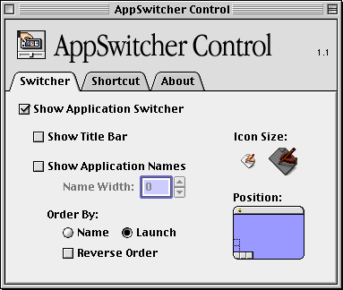

I use it to annoy my sister while she's watching TV on my Boxee Mac.

Free Ruler is a free screen ruler for Mac OS X.

Appswitcher Control is a simple utility to control the appearance of the Application Switcher that is built in to Mac OS 8 and Mac OS 9. Who needs this? I'm just keeping it here for posterity, I guess.
|